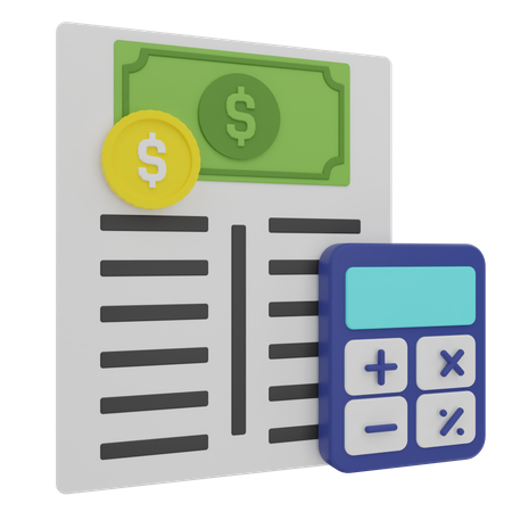

Hoe start je het bedrijf?
Sociale media
Sociale media is een bron wat tegenwoordig super handig is voor adverteren. Zo'n 63% van de
Nederlandse mensen gebruiken sociale media. Je kan op social media gebruik maken van stories en
normale posts die je vaak plaatst zodat je snel gezien word.
Je kan ook eens kijken naar een eventuele inverstering in sociale media betaalde advertenties. advertenties op instagram worden veel bekeken maar moeten wel aantrekkelijk zijn.
Je kan ook eens kijken naar een eventuele inverstering in sociale media betaalde advertenties. advertenties op instagram worden veel bekeken maar moeten wel aantrekkelijk zijn.
Samenwerkingen
Het aan gaan van samenwerkingen is erg handig, je kan namelijk al een kleine basis krijgen van
een ander. Met samenwerkingen kan je denken aan het maken van een product voor een ander met
daar tegen over een promotie. Ook kan je denken aan jouw logo op hun website of dergelijke.
Je hebt veel mogelijkheden en hier naar kijken is zeker niet verkeerd, want veel bedrijven en particulieren staan wel open voor samenwerkingen.
Je hebt veel mogelijkheden en hier naar kijken is zeker niet verkeerd, want veel bedrijven en particulieren staan wel open voor samenwerkingen.


Originaliteit
Originaliteit is super belangrijk als je een bedrijf hebt, hierdoor val je namelijk op.
Origineel zijn kan op meerdere manieren, denk hier aan een goed logo, duidelijke en originele
stijl, goede website en zo wel meer.
Ook is je eigen manier van handelen ook iets waar je origineel in kan zijn. Hoe praat je met je klant? Hoe wil ik de klant helpen en ga zo maar door.
Ook is je eigen manier van handelen ook iets waar je origineel in kan zijn. Hoe praat je met je klant? Hoe wil ik de klant helpen en ga zo maar door.
Activiteit
het officieel inschrijven van je bedrijf is erg gemakkelijk. Je gaat naar de kvk.nl
website om je in te schrijven. Vervolgens moet je een redelijke lijst met vragen in vullen. Dit
zijn vragen over je contact gegevens, ondernemingsplan, naam, categorie en etc. Na het gemaakt
hebben van deze afspraak kom je op bezoek op het kantoor van de gekozen KVK locatie.
Op het kantoor zal een medewerker dan nog 1x alle gegevens doornemen en zal het bedrijf openen, factuur uitprinten en jou je kvk te laten betalen.
Op het kantoor zal een medewerker dan nog 1x alle gegevens doornemen en zal het bedrijf openen, factuur uitprinten en jou je kvk te laten betalen.


Eventuele extra reclame
Het openen van een zakelijke rekening kan ook erg handig zijn, maar kost wel een beetje geld. Je
kan zo'n rekening gebruiken om je privé en bedrijfs geld apart te houden, zo kan je beter zien
wat je uitgeeft voor je bedrijf of verdient en dit scheelt werk met de boekhouding.
Ook kan je op zo'n rekening je boekhouder toegang geven om te zien wat je binnenkrijgt of uitgeeft, zo hoef je niet elke week door te geven wat je hebt uitgegeven of verdient, en bespaar je geld en tijd.
Ook kan je op zo'n rekening je boekhouder toegang geven om te zien wat je binnenkrijgt of uitgeeft, zo hoef je niet elke week door te geven wat je hebt uitgegeven of verdient, en bespaar je geld en tijd.
Hulp omstandigers
Nadat je bedrijf geopend is ontvang je een paar gegevens. Dit zijn gegevens zoals je KVK-nummer,
BTW-id en OB-nummer. Je KVK-nummer zit gekoppeld aan je bedrijf, dit nummer moet openbaar op
sociale media en dergelijke staan zodat mensen je bedrijf kunnen opzoeken. Je BTW-id is voor de
belasting dienst, hiermee kan jij je toeslagen in dienen van je verdiende geld inclusief
BTW.
Je omzetbelastingnummer (voorheen het btw-nummer) gebruik je bij contact met de Belastingdienst. Bijvoorbeeld als je een brief schrijft, de BelastingTelefoon belt of bij btw-aangiftes. Een omzetbelastingnummer ziet er zo uit: de 9 cijfers van je BSN, letter B, 2 cijfers
Je omzetbelastingnummer (voorheen het btw-nummer) gebruik je bij contact met de Belastingdienst. Bijvoorbeeld als je een brief schrijft, de BelastingTelefoon belt of bij btw-aangiftes. Een omzetbelastingnummer ziet er zo uit: de 9 cijfers van je BSN, letter B, 2 cijfers